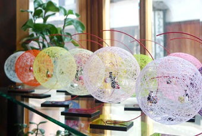
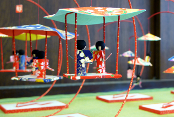

SHOP INFORMATION風の館うえのや
京の和紙工芸を堪能できるお店

倉敷アイビースクエアからほど近いところにある「風の館うえのや」は、1988年にオープンした和紙工芸とモビールのお店。
気さくなご夫婦と看板娘のうさぎ「ちゃこちゃん」が出迎えてくれます。小さな店内には、全て京都で手作りしているという繊細な工芸品がいっぱいあります。ほとんどの商品に京都の友禅紙が使用されており、鮮やかな色彩と多彩な和柄が、心を和ませてくれます。
風に揺らぐ愛らしい小物たち
お店一番のおすすめ商品「絹てまり」は、絹糸を網目状に巻いた球の中に、友禅紙で作られた人形を入れ込み、ひとつひとつ丁寧に手作りされたものです。ゆらゆらと風に揺れる絹てまりは、まるでシャボン玉のよう。雛人形や桜、紅葉、サンタクロースなどの季節ものも揃っています。その他にも、絹てまりのミニオブジェや友禅紙のしおり、友禅紙のモビール、焼き物など、可愛らしいものがたくさん並んでいます。
観光に便利な場所

倉敷駅から徒歩13分、町家を改装したお店が軒を並べる通りの一角に「風の館うえのや」はあります。周辺には、「倉敷民藝館」、「倉敷考古館」など、倉敷の文化・芸術に出会える場所がいっぱい。高価な工芸品というよりは、手頃な価格でお土産を購入できるお店です。和の風情豊かな和紙工芸は、海外の観光客にも人気だそうです。美観地区へお越しの際は、ぜひ立ち寄ってみてください。
Googleマップでみる
一覧に戻る